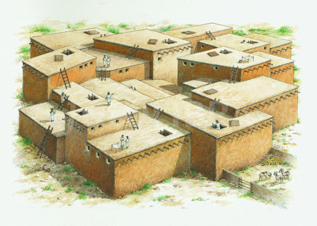

Rationale: Catalhoyuk | Generic Circuit Board
Four walls, a floor and a ceiling: architecture’s ur-space, the room, is inevitably a variation of the same theme. Its most common iteration is based on the use of 90-degree angles between wall and floor, ceiling and wall, and wall and wall. The 90-degree angle inevitably leads to its mirrored other, a perpendicular parallel. It becomes the only angle, the one compositional act that leaves an identical residue, where the primary product equals its own waste – two for the price of one. Any space structured on the 90-degree angle triggers a chain reaction in which each step implies the next. In its fractal repetition, any series of such spaces creates a theoretically ideal condition: zero waste of space. Any such (series of) space(s) is called ‘a box’. "The box has existed for some time. He who designs a box will not be the first. Originality and the box are incompatible. The box is the natural outcome of all rational parameters combined, the form in which geometry and economy meet in perfect sync. The box doesn’t resist; it complies. It is easy."

Çatalhöyük, one of the world's oldest settlements (7500BC) remains one of the first examples of the box as being an efficient container of things and people.

The Austrian engineer Paul Eisler invented the printed circuit as part of a radio set while working in England around 1936. Around 1943 the USA began to use the technology on a large scale to make proximity fuses for use in World War II. After the war, in 1948, the USA released the invention for commercial use. Printed circuits did not become commonplace in consumer electronics until the mid-1950s, after the Auto-assembly process was developed by the United States Army.